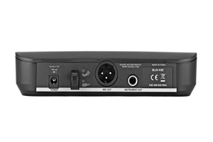
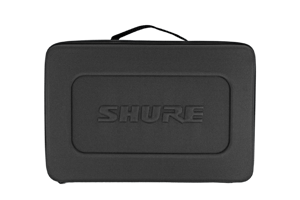
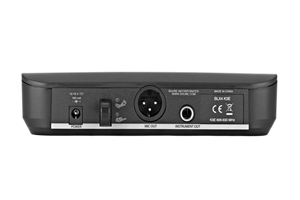
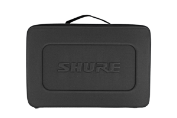
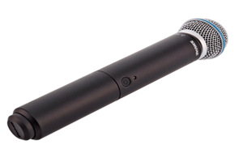
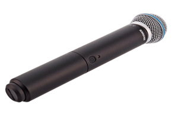
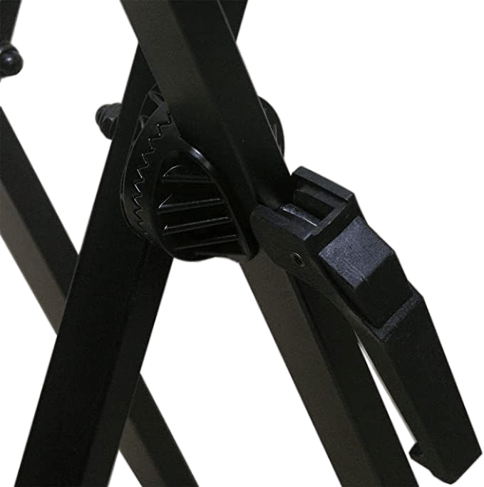
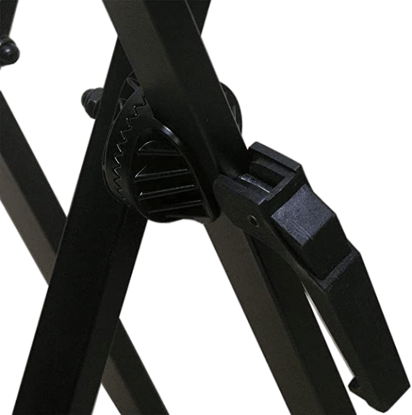

ÉVÉNEMENTS·SONORE·ET LUMIÈRE
+34 603 62 14 19Location de son
Ordonner


BRONZE

SILVER

GOLD

PLATINUM

DIAMOND

BIG BOSS
* Dans cette catégorie, vous pouvez voir l'offre de location de kits. Les kits sont conçus en fonction du budget et de la taille de l'événement, mais ne sont PAS limités en positions. Nos responsables vous aideront dans le choix du matériel en fonction de vos souhaits et préférences.

La location de matériel de sonorisation et d'éclairage est la meilleure solution si vous planifiez un événement où des artistes et des musiciens se produiront. Chaque client peut compter sur le fait que des spécialistes non seulement livreront l'équipement, mais l'arrangeront sur le site et le connecteront.L'arsenal de l'entreprise ne comprend que les équipements de sonorisation les plus modernes fabriqués par des marques renommées. Nous vous aiderons à choisir la meilleure option pour tout événement, d'une petite fête amicale, anniversaire à un concert de gala, festival. L'avantage de la location son et lumière est que vous n'avez pas à sélectionner vous-même le matériel nécessaire, recherchez des spécialistes capables de le connecter. Il vous suffit d'expliquer aux responsables quel événement nécessite la location d'équipement, et nos pros sélectionneront la meilleure solution, des microphones aux consoles de mixage en passant par les amplificateurs et les systèmes acoustiques.
détaillé...La musique de haute qualité fait partie intégrante de toutes les vacances. Même les petits événements et présentations nécessitent un équipement audio professionnel. En effet, personne n'aime le son d'un équipement défectueux ou un grondement qui peut gâcher l'impression générale même du plus grand événement. Préparez-vous rapidement et efficacement pour l'événement à venir. Nous louons les derniers équipements sonores HAUT DE GAMME à Marbella et sur toute la Costa del Sol, garantissant que votre événement est fort, avec des mélodies et des voix claires. Nous sommes spécialisés dans l'assistance technique aux événements, et la location de sonorisation est l'une de nos spécialités. Lorsque nos spécialistes arrivent sur place, ils apportent tout l'équipement nécessaire et l'installent rapidement et le préparent pour le travail. Avec notre aide, vous pouvez créer une atmosphère lumineuse, énergique et festive pour votre fête, dont tous les participants se souviendront !


 



 


Système de microphone vocal sans fil BLX24E/B58 avec étui de transport. MICROPHONE VOCAL BETA 58A Fréquence adaptée au chant, avec des médiums et des graves brillants pour un contrôle de proximité. Aimant en néodyme pour un signal/bruit élevé Grille en acier trempé résistante à l'usure et aux abus Système de montage avancé à amortissement d'air, Minimisation de la transmission des bruits mécaniques et des vibrations Faiblement affecté par l'impédance de charge variable Qualité et fiabilité légendaires de Shure ÉMETTEUR BLX2 LED pour l'alimentation et l'état de la batterie Contrôle de gain réglable Recherche de fréquence rapide et facile Les piles AA (incluses) fournissent jusqu'à 14 . Portée de fonctionnement 100 m (300 pieds) (visible) Récepteur BLX4 Jusqu'à 12 systèmes compatibles (selon la région) Diverses antennes internes contrôlées par microprocesseur QuickScan détermine la meilleure fréquence d'ouverture avec une seule touche ¼" et sorties audio XLR Indicateur d'état audio LED bicolore Mallette de transport, P/N : 95D16526 Référence de l'adaptateur pivotant : 90F4046 Adaptateur fileté pour alimentation PS23E : 31B1856
Ordonner


Le haut-parleur Bose F1 modèle 812 est le premier haut-parleur portable auto-alimenté qui vous permet de contrôler le motif vertical. Quelle que soit la pièce dans laquelle vous vous trouvez, vous bénéficierez d'une couverture adéquate. Le système d'enceintes principal pour les groupes, les DJ et les événements. Gamme complète 1000W. Contrôle vertical flexible avec une couverture horizontale de 100º. Son ensemble flexible vous permet de choisir entre 4 modèles de couverture. Un woofer de 12" et huit haut-parleurs de 2,25". Technologie de réseau FLEX. Conception de déflecteur flexible pouvant être configurée de quatre manières uniques, pour sélectionner le meilleur régime de couverture pour l'application. Matrice de ligne moyenne/haute avec 8 haut-parleurs orientés verticalement. Chaque haut-parleur est monté sur un guide d'ondes personnalisé à 100 degrés qui offre une couverture large et stable. Haut-parleur de graves 12" hautes performances pilote offre une reproduction puissante des basses. Conception à double amplification avec deux amplificateurs de classe D hautes performances pour alimenter séparément le pilote de réseau LF FLEX de 12 ". 2 canaux d'entrée avec commandes de volume indépendantes et commutateur de niveau de ligne/micro sur le canal 1. Montage sur poteau de 35 mm. Dimensions 665 x 334 x 372 mm. Poids 20,2 kg. 2X SUBWOOFER BOSE F1 Le subwoofer Bose F1 offre toutes les fonctionnalités d'un caisson de graves plus grand, mais dans un boîtier compact qui le rend facile à transporter. Le subwoofer 1000W F1 utilise deux haut-parleurs de 10" pour offrir un son de haute qualité et des basses profondes et percutantes. Ce subwoofer comprend un support de montage intégré conçu pour monter le haut-parleur à matrice flexible F1 812, ce qui rend l'installation rapide et facile, tandis que les canaux de câble assurent une installation propre et professionnelle. Un interrupteur de polarité innovant vous permet de régler la polarité du subwoofer, le choix entre NORM et REV et l'inversion de polarité facilitent la correction du chevauchement des basses. C'est le système idéal pour tout groupe, musiciens solo, DJ, établissements d'accueil et plus encore. Caractéristiques : Type de système : autonome Puissance système : 1000 W Drivers : 2 x 10- haut-parleurs pouces à grande course Réponse en fréquence : 48 Hz - 100 Hz Réponse en fréquence : 38 Hz - 115 Hz (-10 dB) Dispersion nominale : omnidirectionnelle Niveau de pression acoustique maximum à 1 m : 132 dB SPL (crête) Fréquence de coupure : pas de Butterworth 40 - Filtre Butterworth 100Hz 100Hz 4- ordre à la sortie de ligne Distorsion à la puissance nominale : max. 0,1 % (30 Hz - 154 kHz) Limiteur de système : Limiteur dynamique Indicateur d'alimentation : LED bleue : Indicateurs de signal de système activé : Limite d'alimentation/défaut Entrée de signal LED avant Connexions d'entrée : 2 x XLR - 1/4'' Commandes combinées : Niveau de volume Fonction LED avant off Sélectionner par . Grille : Grille en acier perforé revêtu Dimensions : 688 x 410,16 x 448,5 mm (H x L x P) Poids net : 24,9 kg
Ordonner


Pioneer XDJ-XZ est un système DJ tout-en-un pour rekordbox et Serato DJ Pro. L'unité polyvalente est équipée d'un large éventail de fonctionnalités, d'un châssis robuste et fiable et de la sensation d'utiliser la gamme de platines et de mélangeurs professionnels super populaires de CDJ et DJM. Prise en charge des médias Vous pouvez choisir que vous souhaitiez utiliser des périphériques USB, connecter votre ordinateur portable et contrôler rekordbox DJ, ou utiliser le mode Link Export pour lire directement les morceaux de la bibliothèque rekordbox. Sinon, il y a le bonus de connecter des sources externes telles que des platines vinyles, des échantillonneurs, des CDJ ou des smartphones aux 3ème et 4ème canaux, et le lien Pro DJ vous permet de parcourir et de sélectionner des pistes à partir du CDJ. Travailler avec les écrans Le modèle est doté d'un écran LCD tactile de 7 pouces qui affiche des informations opérationnelles. Il y a deux jog wheels pleine grandeur, chacun avec un On Jog Display au centre. L'écran couleur affiche des informations importantes telles que les formes d'onde, le BPM, repères instantanés et plus encore. Toutes ces informations visuelles disponibles signifient que vous pouvez vous concentrer sur votre présentation au lieu de regarder votre ordinateur portable. Les jog wheels pleine grandeur sont parfaits pour le mélange et donnent une sensation de rayures. Commutation et contrôle L'appareil est rempli de diverses commandes, avec la disposition familière du NXS2. Vous pouvez mixer avec 4 canaux et utiliser 14 Beat FX et 6 Sound Color FX pour ajouter de la vivacité et de l'émotion à vos performances. Il y a aussi 16 pads multicolores (huit sur chaque platine), trois entrées USB (deux sur le panneau supérieur et une à l'arrière pour connecter un ordinateur portable) idéales pour des transitions fluides, 2 entrées ligne RCA, 2 entrées Phono RCA, 1 entrée AUX RCA et 2 prises micro XLR et 6,35 mm TRS. De plus, il y a 2 sorties Master XLR et RCA, 1 sortie 1/4" TRS, 2 prises casque stéréo 1/4", une mini prise casque stéréo 3,5 mm et 1 sortie 1/4. TS. Le son de l'unité produit fantastique, un son clair et de haute qualité grâce aux fonctionnalités avancées du système et à la capacité de s'adapter à l'environnement dans lequel vous jouez. Vous pouvez affiner votre mixage à l'aide de l'égaliseur 3 bandes sur la sortie Master. Vous trouverez également un égaliseur 3 bandes sur chacune des entrées micro pour un contrôle exceptionnel. Outre, il y a une fonction de suppression de larsen s'il se produit à cause des microphones. L'unité tout-en-un Pioneer XDJ-XZ est le premier système DJ tout-en-un de ce type. Il s'agit d'une fonctionnalité qui vous permet de synchroniser parfaitement un équipement externe, puis de synchroniser le son avec le mixage. Vous pouvez également afficher les pistes sur le périphérique USB à partir de n'importe quel périphérique connecté. Logiciel et commandes Rekordbox est inclus et prêt à fonctionner avec Serato DJ Pro après une mise à jour du firmware prévue début 2020. Fiable, durable et de haute qualité, le système DJ est indéniablement bien équipé. Il est parfait pour une variété de lieux, de clubs ou d'événements, ou même au cœur d'un home studio. Plug and play Grâce à la fonction plug and play, l'appareil est prêt à l'emploi. Assurez-vous simplement de mettre à jour la dernière version de rekordbox DJ et d'activer la clé de licence fournie avec le système. À mentionner également, qu'il prend en charge rekordbox DVS, qui peut faire l'objet d'une licence séparée. Il en va de même pour Serato DVS après la mise à jour mentionnée. Caractéristiques : Gamme de fréquence : 20 - 20000 Hz
Ordonner


Devialet Phantom I 108 dB est un système de haut-parleurs de haute qualité avec prise en charge Bluetooth, Spotify et Airplay2. Le Devialet Phantom I 108dB est conçu avec une technologie de pointe pour un son immersif et musical. Gamme Phantom La gamme Devialet Phantom I comprend deux modèles : 103 dB et 108 dB. Ils diffèrent par leur puissance et leur niveau de pression acoustique. Ils sont parfaits pour vos enceintes principales gauche et droite ou si vous en avez besoin de plus pour remplir de grandes pièces. Double zoom stéréo Le Devialet Phantom I 108dB peut être couplé avec un autre ou plusieurs pour encore plus d'expansion sonore et un système multi-pièces. En ajoutant une autre enceinte au mixage, votre son prend une toute autre dimension. Application Devialet Disponible pour Android et Apple iOS, l'application Devialet peut synchroniser l'ensemble de votre système Devialet pour écouter comme un seul, ainsi que la possibilité de lire de l'audio indépendamment dans chaque pièce. L'application Devialet vous permet également de régler les haut-parleurs, de modifier les paramètres, de rester à jour et de régler la latence, entre autres commandes. Capacités de streaming Le Phantom I 108dB de Devialet est doté du Bluetooth intégré pour que vous puissiez coupler votre téléphone, tablette ou ordinateur portable, afin que vous puissiez diffuser de l'audio sans fil. Il prend en charge les applications de streaming pour rendre ce processus fluide, comme Apple AirPlay 2, Spotify Connect et Roon Ready. Le Devialet Technology Phantom I 108dB de Devialet intègre de nombreuses technologies brevetées avancées de Devialet pour offrir un son précis et puissant.
Ordonner


Le CDJ-3000 de Pioneer est un lecteur DJ professionnel à écran tactile de 9 pouces avec connectivité iPhone, le nouveau produit phare de la gamme CDJ. Le CDJ-3000 dispose d'un MPU avec de puissantes capacités de traitement. Le traitement audio interne du CDJ-3000 a été mis à niveau à 96 kHz/32 bits. et peut être utilisé avec tous les formats audio. La technologie mise à jour comprend également une nouvelle fonction Key Shift, une lecture à vitesse variable et un contrôle du tempo principal. Le grand écran tactile de 9" facilite la visualisation et la gestion de votre bibliothèque. Les boutons Liste de lecture et Recherche sont situés au-dessus de l'écran pour un accès rapide aux listes de lecture et une navigation facile dans votre bibliothèque. Il y a maintenant 8 boutons de repère instantané sous l'écran. Il convient également de noter que le nouveau CDJ-3000 n'a pas de lecteur de CD. Vous pouvez connecter votre ordinateur portable et lire directement votre bibliothèque rekordbox, lire de la musique depuis une clé USB ou une carte SD, ou - si vous utilisez la dernière version de rekordbox - connectez même votre iPhone au CDJ-3000 via un câble USB et mixez les pistes directement depuis votre téléphone. Le Pioneer DJM-V10 est un nouveau type de table de mixage DJ professionnelle à 6 canaux avec des caractéristiques uniques. Le mélangeur offre une qualité inégalée de 96 kHz/64 bits, un traitement numérique DSP et un A/D et numérique 32 bits de haute qualité. convertisseurs analogiques et horloge à faible jitter. 6 canaux avec différents types d'entrées vous aideront à créer la configuration parfaite et à connecter n'importe quel équipement, des CDJ et platines aux échantillonneurs, synthétiseurs et boîtes à rythmes. Le mélangeur est équipé d'un nouvel égaliseur 4 bandes. Le compresseur intégré vous permet de régler le volume de vos pistes. La section Send-Return étendue vous permet d'ajouter des effets externes ou de les combiner avec les effets intégrés. Un isolateur principal à 3 bandes avec une nouvelle fonction boost/cut et des fréquences de croisement réglables et d'autres paramètres vous permet de contrôler facilement la tonalité de l'ensemble de votre mix. Deux sorties casque et égaliseur permettent à deux DJ de surveiller confortablement. La fixation du cordon d'alimentation assure une connexion fiable, empêche sa déconnexion accidentelle du réseau. Enregistrez et archivez vos mix via iPhone ou iPad, téléchargez sur le cloud ou diffusez facilement vos sessions en direct.
Ordonner


Le Pioneer DJM-V10 est un nouveau type de table de mixage DJ professionnelle à 6 canaux avec des caractéristiques uniques. Le mélangeur offre une qualité inégalée de 96 kHz/64 bits, un traitement numérique DSP, ainsi que des convertisseurs A/N et N/A 32 bits de haute qualité et une horloge à faible jitter. 6 canaux avec différents types d'entrées vous aideront à créer la configuration parfaite et à connecter n'importe quel équipement, des CDJ et platines aux échantillonneurs, synthétiseurs et boîtes à rythmes. Le mélangeur est équipé d'un nouvel égaliseur 4 bandes. Le compresseur intégré vous permet de régler le volume de vos pistes. Section étendue Envoyer- Return vous permet d'ajouter des effets externes ou de les combiner avec des effets intégrés. Un isolateur principal à 3 bandes avec une nouvelle fonction boost/cut et des fréquences de croisement réglables et d'autres paramètres vous permet de contrôler facilement la tonalité de l'ensemble de votre mix. Deux sorties casque et égaliseur permettent à deux DJ de surveiller confortablement. La fixation du cordon d'alimentation assure une connexion fiable, empêche sa déconnexion accidentelle du réseau. Enregistrez et archivez vos mix via iPhone ou iPad, téléchargez sur le cloud ou diffusez facilement vos sessions en direct. Une fonction DVS à faible latence est également disponible, vous permettant de contrôler et de scratcher à partir de CDJ ou de platines à l'aide de rekordbox, Serato DVS (licence Serato DJ Club Kit vendue séparément, bientôt compatible avec Serato DJ Pro) ou TRAKTOR PRO 3 (vendu séparément). De plus, le DJM-V10 prend en charge le protocole avancé PRO DJ LINK ShowKontrol, qui vous permet d'utiliser toutes les informations de base du DJM-V10, d'ajuster l'audio et la vidéo pour créer un spectacle. Spécifications : Type : Table de mixage DJ Nombre de canaux : 6 Réponse en fréquence : 20 - 40 000 Hz Fréquence d'échantillonnage : 96 kHz ADC/DAC : 32 bits Rapport signal/bruit : 105 dB Crossfader : Magvel fader Entrées : 4 PHONO (RCA), Send/ Retour, LAN x 1, USB x 2 ports USB B, 1 port USB A Sorties : 2 MASTER (XLR, RCA), 1 BOOTH (prise TRS 6,35 mm), 4 MONITEUR CASQUE (chaque section : jack 1/4", 1/8"), 1 REC (RCA), 1 numérique (AES/EBU), 1 MIDI (DIN) Contrôle MIDI : contrôles MIDI entièrement assignés Compatible DVS : rekordbox, Serato DJ Pro, TRAKTOR PRO 3 Dimensions : 437,6 x 107,9 x 467 mm Poids : 11,9 kg.
Ordonner

La platine vinyle Technics SL-1210 MK7 est une nouvelle évolution d'un modèle devenu très populaire auprès des mélomanes et des DJ. Dans le modèle Technics SL-1210 MK7, bien sûr, le principe de conception principal a été conservé - entraînement direct à partir d'un moteur à couple de démarrage élevé. L'entraînement direct assure un maintien stable et précis de la vitesse de rotation du plateau, ainsi que la possibilité de son réglage en douceur et de son freinage manuel (les deux dernières circonstances rendent le lecteur si désirable pour les professionnels). Dans le modèle Technics SL-1210 MK7, le moteur a été amélioré, ce qui a encore amélioré ses paramètres et augmenté la fiabilité et la stabilité. Technics SL- Le 1210 MK7 est doté d'un bras en forme de S équilibré statiquement, également un classique pour les platines de l'entreprise. Grâce à une fabrication de haute précision et à une conception réfléchie, le bras de lecture offre un excellent suivi et un son de haute qualité, même sur des disques avec une surface imparfaite. Technics SL- Le 1210 MK7 est doté d'un châssis massif en aluminium moulé sous pression non résonnant avec une plaque ABS en bas, qui est monté sur des supports amortis combinés - ils ont une coque en caoutchouc et un ressort interne. Dans le même temps, les supports sont réglables en hauteur, ce qui vous permet de régler le Technics SL-1210 MK7 exactement horizontalement, même sur des surfaces inégales. Le plateau de la platine est également en aluminium et est recouvert de caoutchouc sur le dessus, ce qui l'amortit et sert également de tapis pour le disque. La couleur de l'éclairage du stroboscope et des commandes du lecteur peut être modifiée à l'aide d'un micro-interrupteur. Le Technics SL-1210 MK7 dispose d'un circuit de hauteur numérique contrôle (changement en douceur de la vitesse de rotation du disque), fonctionnant dans la plage de ± 8 ou 16%, ce qui augmente la précision du réglage. Le Technics SL-1210 MK7 est équipé d'un sélecteur de vitesse électronique de 33, 45 ou 78 tr/min. Il existe également une lampe cible pratique, qui a été utilisée pour la première fois dans le SL-1210 MK2. L'utilisation d'une LED blanche brillante pour l'éclairage rend le lecteur facile à utiliser même dans les pièces sombres.
Ordonner

Avec son poids léger et sa capacité d'écoute sur une seule oreille, le HD 25 Plus est un casque de contrôle indispensable. Les HD 25 Plus fermés sont des casques de monitoring professionnels spécialement conçus qui offrent un degré élevé d'atténuation du bruit ambiant. Ces écouteurs sont capables de gérer des niveaux de pression acoustique élevés et sont extrêmement durables. Ils sont exceptionnellement adaptés aux environnements bruyants tels que la collecte d'informations, la sonorisation, la surveillance de studio et les tests d'équipements audio. Idéal pour les caméramans et les DJ - Ce sont de vrais écouteurs professionnels. Caractéristiques Type d'appareil casque filaire Conception supra-auriculaire Technologie dynamique Fréquence minimale reproductible 16 Hz Fréquence maximale reproductible 22000 Hz Impédance 70 Ohm Sensibilité 120 dB Paramètres de sensibilité dB/V Puissance maximale 200 mW Coefficient harmonique 0. 3%
Ordonner
 

Le support à double cadre robuste de type X offre une stabilité supplémentaire pour les claviers électroniques numériques lourds et légers. Le mécanisme de dégagement rapide de ce support permet à l'utilisateur de régler la hauteur de 10 cm à 98 cm ; par rapport à la plupart des autres supports qui n'autorisent que cinq positions fixes. L'assemblage n'est pas nécessaire ; Les parties métalliques de ce support de clavier sont soudées ensemble et il n'y a aucune vis à perdre. Des sangles de soutien solides fixées au support du clavier empêchent le clavier de se déplacer pendant la performance. Les pieds en caoutchouc antidérapants confèrent à ce support une stabilité supplémentaire.
Ordonner


Le CDJ-3000 de Pioneer est un lecteur DJ professionnel à écran tactile de 9 pouces avec connectivité iPhone, le nouveau produit phare de la gamme CDJ. Le CDJ-3000 dispose d'un MPU avec de puissantes capacités de traitement. Le traitement audio interne du CDJ-3000 a été mis à niveau à 96 kHz/32 bits. et peut être utilisé avec tous les formats audio. La technologie mise à jour comprend également une nouvelle fonction Key Shift, une lecture à vitesse variable et un contrôle du tempo principal. Le grand écran tactile de 9" facilite la visualisation et la gestion de votre bibliothèque. Les boutons Liste de lecture et Recherche sont situés au-dessus de l'écran pour un accès rapide aux listes de lecture et une navigation facile dans votre bibliothèque. Il y a maintenant 8 boutons de repère instantané sous l'écran. Il convient également de noter que le nouveau CDJ-3000 n'a pas de lecteur de CD. Vous pouvez connecter votre ordinateur portable et lire directement votre bibliothèque rekordbox, lire de la musique depuis une clé USB ou une carte SD, ou - si vous utilisez la dernière version de rekordbox - connectez même votre iPhone au CDJ-3000 via un câble USB et mixez les pistes directement depuis votre téléphone. Le Pioneer DJM-V10 est un nouveau type de table de mixage DJ professionnelle à 6 canaux avec des caractéristiques uniques. Le mélangeur offre une qualité inégalée de 96 kHz/64 bits, un traitement numérique DSP et un A/D et numérique 32 bits de haute qualité. convertisseurs analogiques et horloge à faible jitter. 6 canaux avec différents types d'entrées vous aideront à créer la configuration parfaite et à connecter n'importe quel équipement, des CDJ et platines aux échantillonneurs, synthétiseurs et boîtes à rythmes. Le mélangeur est équipé d'un nouvel égaliseur 4 bandes. Le compresseur intégré vous permet de régler le volume de vos pistes. La section Send-Return étendue vous permet d'ajouter des effets externes ou de les combiner avec les effets intégrés. Un isolateur principal à 3 bandes avec une nouvelle fonction boost/cut et des fréquences de croisement réglables et d'autres paramètres vous permet de contrôler facilement la tonalité de l'ensemble de votre mix. Deux sorties casque et égaliseur permettent à deux DJ de surveiller confortablement. La fixation du cordon d'alimentation assure une connexion fiable, empêche sa déconnexion accidentelle du réseau. Enregistrez et archivez vos mix via iPhone ou iPad, téléchargez sur le cloud ou diffusez facilement vos sessions en direct. Le Pioneer DJM-V10 est un nouveau type de table de mixage DJ professionnelle à 6 canaux avec des caractéristiques uniques. Le mélangeur offre une qualité inégalée de 96 kHz/64 bits, un traitement numérique DSP et un A/D et numérique 32 bits de haute qualité. convertisseurs analogiques et horloge à faible jitter. 6 canaux avec différents types d'entrées vous aideront à créer la configuration parfaite et à connecter n'importe quel équipement, des CDJ et platines aux échantillonneurs, synthétiseurs et boîtes à rythmes. Le mélangeur est équipé d'un nouvel égaliseur 4 bandes. Le compresseur intégré vous permet de régler le volume de vos pistes. La section Send-Return étendue vous permet d'ajouter des effets externes ou de les combiner avec les effets intégrés. Un isolateur principal à 3 bandes avec une nouvelle fonction boost/cut et des fréquences de croisement réglables et d'autres paramètres vous permet de contrôler facilement la tonalité de l'ensemble de votre mix. Deux sorties casque et égaliseur permettent à deux DJ de surveiller confortablement. La fixation du cordon d'alimentation assure une connexion fiable, empêche sa déconnexion accidentelle du réseau. Enregistrez et archivez vos mix via iPhone ou iPad, téléchargez sur le cloud ou diffusez facilement vos sessions en direct. Une fonction DVS à faible latence est également disponible, vous permettant de contrôler et de scratcher à partir de CDJ ou de platines à l'aide de rekordbox, Serato DVS (licence Serato DJ Club Kit vendue séparément, bientôt compatible avec Serato DJ Pro) ou TRAKTOR PRO 3 (vendu séparément). De plus, le DJM-V10 prend en charge le protocole avancé PRO DJ LINK ShowKontrol, qui vous permet d'utiliser toutes les informations de base du DJM-V10, d'ajuster l'audio et la vidéo pour créer un spectacle. Spécifications : Type : Table de mixage DJ Nombre de canaux : 6 Réponse en fréquence : 20 - 40 000 Hz Fréquence d'échantillonnage : 96 kHz ADC/DAC : 32 bits Rapport signal/bruit : 105 dB Crossfader : Magvel fader Entrées : 4 PHONO (RCA), Send/ Retour, LAN x 1, USB x 2 ports USB B, 1 port USB A Sorties : 2 MASTER (XLR, RCA), 1 BOOTH (prise TRS 6,35 mm), 4 MONITEUR CASQUE (chaque section : jack 1/4", 1/8"), 1 REC (RCA), 1 numérique (AES/EBU), 1 MIDI (DIN) Contrôle MIDI : contrôles MIDI entièrement assignés Compatible DVS : rekordbox, Serato DJ Pro, TRAKTOR PRO 3 Dimensions : 437,6 x 107,9 x 467 mm Poids : 11,9 kg.
Ordonner